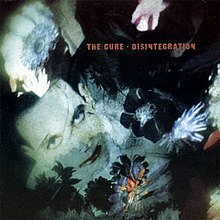
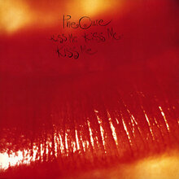
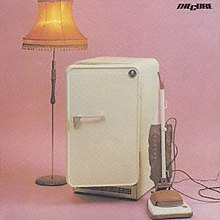
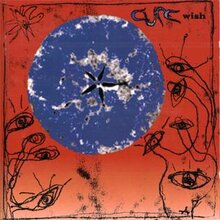

<!--2372036_Muhammad Sava Akbar Bastaman_B-->
<!DOCTYPE html>
<html lang="en">
<head>
    <meta charset="UTF-8">
    <meta name="viewport" content="width=device-width, initial-scale=1.0">
    <title>The Cure</title>
    <link rel="stylesheet" href="styl.css">
    <link rel="stylesheet" href="style3.css">
    <link rel="preconnect" href="https://fonts.googleapis.com">
    <link rel='stylesheet' id='theme-font-awesome-css' href='//use.fontawesome.com/releases/v5.14.0/css/all.css' type='text/css' media='all' />
    <link rel="stylesheet" href="https://cdnjs.cloudflare.com/ajax/libs/font-awesome/4.7.0/css/font-awesome.min.css">
    <link rel="preconnect" href="https://fonts.gstatic.com" crossorigin>
    <link href="https://fonts.googleapis.com/css2?family=Abril+Fatface&family=Amiri:ital@1&family=Girassol&family=Titan+One&display=swap" rel="stylesheet">
    <link href="https://cdn.jsdelivr.net/npm/bootstrap@5.3.2/dist/css/bootstrap.min.css" rel="stylesheet" integrity="sha384-T3c6CoIi6uLrA9TneNEoa7RxnatzjcDSCmG1MXxSR1GAsXEV/Dwwykc2MPK8M2HN" crossorigin="anonymous">
</head>
<aside>
    <header style="background-color: aqua;">
    </header>
    <nav>
      <nav class="navbar navbar-expand-lg bg-secondary">
      <div class="container-fluid">
          
        <a class="navbar-brand" style="color:black" style="font-family: 'Amiri', serif;"> &nbsp;Bastaman</a>
        <button class="navbar-toggler" type="button" data-bs-toggle="collapse" data-bs-target="#navbarSupportedContent" aria-controls="navbarSupportedContent" aria-expanded="false" aria-label="Toggle navigation">
          <span class="navbar-toggler-icon"></span>
        </button>
        <div class="collapse navbar-collapse" id="navbarSupportedContent">
          <ul class="navbar-nav me-auto mb-2 mb-lg-0">
            <li class="nav-item">
              <a class="nav-link active" style="color:red" class="warnafontnav" aria-current="page" href="index.html">Home</a>
            </li>
            <li class="nav-item">
              <a class="nav-link" style="color:white" class="warnafontnav" href="#album">Albums</a>
              <li class="nav-item">
              </li>
                <a class="nav-link" style="color:white" class="warnafontnav" href="#spotify">Spotify</a>
              </li>
          </ul>
        </div>
      </div>
      </nav>
  </nav>
      <!--Navbar-->
      <main>
        <aside>
            <h1>The Cure</h1><br><br>
            <p>
              The Cure are a rock band which formed in 1976 in Crawley, England, United Kingdom. The band originally consisted of Robert Smith (vocals, guitar), Porl Thompson (guitar), Michael Dempsey (bass) and Lol Tolhurst (drums), with the band’s lineup overgoing several changes throughout the years and Smith remaining as the only constant member throughout the band’s history. The band currently consists of Smith (vocals, guitar), Simon Gallup (bass), Roger O’Donnell (keyboards), Jason Cooper (drums) and Reeves Gabrels (guitar). The Cure has released 13 studio albums and have sold 27 million albums worldwide and are considered a major influence on alternative rock, goth rock and new wave music.<br><br>

              The Cure’s full lineup history is as follows: Robert Smith (vocals, guitar 1976-present), Lol Tolhurst (drums, keyboards 1976-1989), Michael Dempsey (bass 1976-1979), Porl Thompson (guitar, keyboards 1976-1978, 1983-1992, 2005 -2010), Simon Gallup (bass, keyboards 1979-1982, 1985-present), Matthieu Hartley (keyboards 1979 -1980), Andy Anderson (drums 1983-1984), Phil Thornalley (bass 1983-1984), Boris Williams (drums 1984-1994), Roger O’Donnell (keyboards 1987 -1990, 1995-2005, 2011-present), Perry Bamonte (guitar, keyboards 1990-2005), Jason Cooper drums 1995-present) and Reeves Gabrels (guitar 2012-present)<br><br>
              
              Just as the group’s lineup has changed, the band’s sound has evolved throughout the years, starting off as a post-punk band similar to Wire and Gang of Four before morphing into a gothic rock band in the early 80’s, to a synthpop group in the mid-80’s and a power-pop-alternative band in the early 90’s. The Cure has always been an alternative and very independent band which was evident from the early days. Shunning the anarchistic tendencies of many punk bands after their formation in 1976 , The Cure’s first release was Killing an Arab, based on material from French writer Albert Camus’ “L’Etranger” (translated into English as The Stranger or The Outsider). This track courted controversy because of its theme (misinterpreted as racist, it was in fact, about the futility of killing any ethnicity), but it started to secure a small following, which grew following the release of debut album Three Imaginary Boys and non-LP single Boys Don’t Cry in 1979, the latter of which would become one of The Cure’s most famous songs. At that time, The Cure embarked on tour as the support for Siouxsie & the Banshees’ Join Hands Tour. After the sudden departure of guitarist John McKay, Robert was recruited as guitarist for the Banshees as the band ‘felt he was the only person capable of taking on the task.’ As a result, Robert completed the tour playing two sets a night with The Cure and Siouxsie and the Banshees.<br><br>
              
              Following this, The Cure moved from their punk leanings into the portentous post-punk territory, releasing three albums of doom-laden rock in three years, Seventeen Seconds, Faith and Pornography, the latter of which charted inside the UK top 10, though the band were repeatedly dogged by the “Second-class Joy Division” tag. Following their third set of line-up changes, the group released Japanese Whispers, a compilation of three singles and their b-sides. Through their desire to escape the Joy Division description, the singles were a poppier effort, featuring danceable tracks like Let’s Go To Bed alongside pop songs like Love Cats. Following the commercial disappointment of follow-up album The Top in 1984, The Cure returned to form with 1985’s The Head On The Door. Featuring the singles In Between Days and Close To Me, The Head on the Door was distant from the band’s punk roots, having more in common with successful alternative bands like The Smiths and Echo & The Bunnymen than their gloomier roots.<br><br>
              
              Two years later, the eighth studio album Kiss Me, Kiss Me, Kiss Me was a more stadium-sized effort, though featuring audacious pop songs like Why Can’t I Be You, it was seemingly caught between two styles. However, it was the band’s ninth effort (following the departure of last surviving founder member other than Robert Smith, Lol Tolhurst), Disintegration, that would be their greatest success, both critically and commercially. Disintegration spawned hit singles like Lullaby (no.5 in the UK), Love Song (an impressive no. 2 in the USA), Pictures of You, and Fascination Street. The album itself was a culmination of The Cure’s directions through the eighties, featuring the poppier side combined with the more tender aspects, as well as the gloomier facets.<br><br>
              
              Following this, a remix compilation named Mixed Up was released in 1990, featuring one new track, Never Enough, and two years later tenth studio album Wish surfaced, which was a hit mainly from the momentum gained by Disintegration, though it also featured their most famous pop song, Friday I’m In Love (no.6 in the UK and no.18 in the US). During the years following this, the band became distracted and discouraged by the lawsuit launched by former member Lol Tolhurst, who felt he had been deprived of royalties. As a result, the 1996 album Wild Mood Swings felt unfocused, and was a critical and commercial failure, though the single Mint Car was a moderate hit.<br><br>
              
              In 1997, The Cure released the compilation Galore, featuring new song Wrong Number. Three years later, at the release of original album Bloodflowers, Robert Smith announced it would be the last album for the band, the album itself being a return to the gloomier rock of Pornography and Faith. Resultantly, another hits compilation was released in 2001. However, in 2004, the band surprised all by returning with a self-titled album, their twelfth studio album, which was a surprise hit, reaching the US Top 10, its lead single – The End of the World – becoming a modest hit on Modern Rock radio, and receiving a relatively warm reception from the press.<br><br>
              
              In May 2005, Smith fired Roger O’Donnell and Perry Bamonte from the band, along with Bamonte’s brother Daryl, who had been The Cure’s tour manager for many years. The remaining members of the band (Robert Smith, longtime bassist Simon Gallup and Jason Cooper) made a few appearances as a trio before it was announced that founding member Porl Thompson would be returning to The Cure.<br><br>
              
              In early 2007 the band toured Asia and Oceania, but a planned North American tour in Autumn 2007 was delayed until Spring 2008 so the band could continue recording their next album.<br><br>
              
              The band released their thirteenth album 4:13 Dream on 27 October 2008. Four singles and a remix EP called “Hypnagogic States” were releases on the 13th of each month preceding the album’s release.<br><br>
              
              In 2009, Robert Smith won the Godlike Genius award at the NME Awards. On April 19, 2009, the band performed at the Coachella Festival in California.<br><br>
              
              During 2010, Robert Smith contributed songs to the soundtrack of the Tim Burton film “Alice in Wonderland” and provided guest vocals on the songs “Not in Love” by Crystal Castles and “Come to Me” by 65daysofstatic.<br><br>
              
              Between 31 May 2011 and 1 June 2011, the band performed three concerts at the Sydney Opera House performing the entirety of one of their first three albums on each night. Porl Thompson did not perform with the band at any of the concerts, but Roger O’Donnell performed with the band for the “Seventeen Seconds” and “Faith” concerts, and co-founding member Lol Tulhurst performed with the band for the first time since 1988 for the “Faith” concert. As of 2011, O’Donnell has returned to the lineup officially. In 2012, the band added former Tin Machine guitarist Reeves Gabrels to the lineup.<br><br>
              
              In 2013 The Cure started The Great Circle Tour, headlinig festivals in Japan, South Korea and North America. In 2014 Robert Smith announced the upcoming release of a new album, to be called 4:14 Scream, featuring 14 songs recorded during the 4:13 Dream sessions and also an accompanying double album 4:26 Dream containing all the tracks from those sessions.</p>
              <br><br><iframe id="spotify" style="border-radius:12px" src="https://open.spotify.com/embed/artist/7bu3H8JO7d0UbMoVzbo70s?utm_source=generator" width="100%" height="352" frameBorder="0" allowfullscreen="" allow="autoplay; clipboard-write; encrypted-media; fullscreen; picture-in-picture" loading="lazy"></iframe>
            </aside>
        <article>
            
            <div style="padding-left: 70px;" class="sociallinks">
              <a href="https://x.com/thecure?s=21" target="_BLANK"><i class="fab fa-twitter"></i></a>
              <a href="https://www.instagram.com/thecure?igsh=MThvbWF6ejV0dzk4OQ" target="_BLANK"><i class="fab fa-instagram"></i></a>
              <a href="https://open.spotify.com/artist/7bu3H8JO7d0UbMoVzbo70s?si=XOmt5t93SW-VbiVH3yfuWQ" target="_BLANK"><i class="fab fa-spotify"></i></a><br><br>
              </div>
              <h2 id="album">Popular Albums</h2>
              <div class="row">
                <div class="column">
              
              <figcaption>Disintegration<br>1989</figcaption>
            </div>
            <div class="column">
              
              <figcaption>Kiss Me, Kiss Me, Kiss Me<br>1987</figcaption>
            </div>
            <div class="column">
              
              <figcaption>Three Imaginary Boys<br>1979</figcaption>
            </div>
            <div class="column">
              
              <figcaption>Wish<br>1992</figcaption>
              </div>
              </div>
            </article>
    </main>
    <footer id="bgfooter">
      <p>&copy; 2024 My Music Website. All rights reserved.</p>
      <style>
      footer {
          background-image: url(https://cdn.pixabay.com/photo/2012/04/10/16/14/union-jack-26119_1280.png);
          background-repeat: no-repeat;
          margin: 30px;
          justify-content: center;
          position: sticky;   
          background-size: 100%;
          text-align: center;
          }
      </style>
  </footer>
</body>
</html>